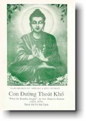
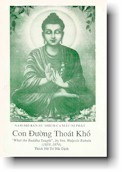

|
ÐỨC PHẬT ÐÃ DẠY NHỮNG GÌ
Hòa thượng WALPOLA RAHULA Nguyên tác: "What The
Buddha Taught" |
 |
|
BuddhaSasana Home Page |
Vietnamese, with Unicode Times font |
|
|
ÐỨC PHẬT ÐÃ DẠY NHỮNG GÌ
Hòa thượng WALPOLA RAHULA Nguyên tác: "What The
Buddha Taught" |
 |
|
Phụ lục
KINH NIỆM XỨ Ðây là những gì tôi được nghe: Một thời, đức Thế Tôn trú tại xứ Kurus trong một thị trấn tên Kammàssadhamma. Ở đây, đức Thế Tôn cho gọi các Tỳ kheo và dạy như sau: "Này các Tỳ kheo, có con đường duy nhất khiến cho chúng sinh được thanh tịnh, vượt qua sầu não, hủy diệt các khổ của thân và tâm, đưa đến cách hành xử chân chính, đến sự thực chứng Niết-bàn. Ðấy là Bốn niệm xứ. Bốn niệm xứ là gì? I. Quán thân: 1. Niệm hơi thở: Ở đây, này các Tỳ kheo, một tỳ kheo quán sát thân thể như là thân thể[1], nhiệt tâm, tỉnh giác, chánh niệm để gột rửa tham dục lo sầu liên hệ đến thế gian. Quán thọ trên các thọ, nhiệt tâm, tỉnh giác, chánh niệm để gột rửa tham dục lo sầu liên hệ đến thế gian. Quán tâm trên tâm, nhiệt tâm, tỉnh giác, chánh niệm để gột rửa tham dục lo sầu liên hệ đến thế gian. Quán pháp trên các pháp, nhiệt tâm, tỉnh giác, chánh niệm để gột rửa tham dục lo sầu liên hệ đến thế gian. Và này các Tỳ kheo, thế nào là một Tỳ kheo quán sát thân thể như là thân thể? Ở đây, này các Tỳ kheo, một tỳ kheo đi vào rừng, hay đến một gốc cây, hay ngôi nhà trống, ngồi kiết già, lưng thẳng, đặt chánh niệm trước mặt [2]. Tỉnh giác vị ấy thở vào, tỉnh giác vị ấy thở ra. Khi thở vào một hơi dài, vị ấy rõ biết "tôi đang thở vào một hơi dài." Khi thở ra một hơi dài, vị ấy rõ biết "tôi đang thở ra một hơi dài." Khi thở vào một hơi ngắn, vị ấy rõ biết "tôi đang thở vào một hơi ngắn." Khi thở ra ngắn, vị ấy rõ biết "tôi đang thở ra một hơi ngắn." Vị ấy tập "cảm giác toàn thân, tôi sẽ thở vào."[3] Vị ấy tập "cảm giác toàn thân, tôi sẽ thở ra." Vị ấy tập "An tịnh thân hành, tôi sẽ thở vào." Vị ấy tập "An tịnh thân hành, tôi sẽ thở ra." Này các Tỳ kheo, cũng như một người thợ quay hay đệ tử ông ta, khi quay chậm, rõ biết mình đang quay chậm, khi quay nhanh rõ biết mình đang quay nhanh. Cũng thế, này các Tỳ kheo, khi một Tỳ kheo thở vô dài, vị ấy rõ biết mình thở vô dài; khi thở ra dài, vị ấy rõ biết mình thở ra dài. Vị ấy tập làm cho thân hành được an tịnh như thế. Như vậy vị ấy sống quán thân trên nội thân; quán thân trên ngoại thân; quán thân trên cả nội ngoại thân. Vị ấy sống quán sự sinh khởi trên thân; quán sự diệt tận trên thân; quán sự sinh và diệt trên thân. "Thân thể là như vậy." Sự quán chiếu này hiện diện nơi vị ấy chỉ cốt để có chánh tri, chánh niệm, và vị ấy sống không nương tựa bám víu gì trên đời. Này các Tỳ kheo, như thế ấy là vị Tỳ kheo sống quán thân thể như là thân thể. 2. Niệm bốn uy nghi: Lại nữa, này các Tỳ kheo, một Tỳ kheo khi đi, tuệ tri mình đang đi; khi đứng tuệ tri mình đang đứng; khi ngồi tuệ tri mình đang ngồi; khi nằm, tuệ tri mình đang nằm; thân thể ở trong tư thế nào, vị ấy đều tuệ tri. [4] Như vậy vị ấy sống quán thân trên nội thân; quán thân trên ngoại thân; quán thân trên cả nội ngoại thân. Vị ấy sống quán sự sinh khởi trên thân; quán sự diệt tận trên thân; quán sự sinh và diệt trên thân. "Thân thể là như vậy." Sự quán chiếu này hiện diện nơi vị ấy chỉ cốt để có chánh tri, chánh niệm, và vị ấy sống không nương tựa bám víu gì trên đời. Này các Tỳ kheo, như vậy là một Tỳ kheo sống quán thân thể như là thân thể. 3. Niệm thân hành Lại nữa, này các Tỳ kheo, một Tỳ kheo hoàn toàn tỉnh giác lúc đi tới đi lui; tỉnh giác lúc nhìn trước mặt hay nhìn quanh; tỉnh giác khi co duỗi tay chân; tỉnh giác lúc đắp y mang bát; tỉnh giác lúc ăn, uống, nhai, nếm; tỉnh giác lúc đại tiện tiểu tiện; lúc đi đứng ngồi, ngủ, thức, nói, im, vị ấy hoàn toàn tỉnh giác, rõ biết việc mình đang làm. Như vậy vị ấy sống quán thân trên nội thân; quán thân trên ngoại thân; quán thân trên cả nội ngoại thân. Vị ấy sống quán sự sinh khởi trên thân; quán sự diệt tận trên thân; quán sự sinh và diệt trên thân. "Thân thể là như vậy." Sự quán chiếu này hiện diện nơi vị ấy chỉ cốt để có chánh tri, chánh niệm, và vị ấy sống không nương tựa bám víu gì trên đời. Này các Tỳ kheo, như vậy là vị Tỳ kheo sống quán thân thể như là thân thể. 4. Quán các thân phần: Lại nữa này các Tỳ kheo, một Tỳ kheo quán sát thân này dưới từ hai gót chân lên đến đỉnh đầu, được bao phủ bởi da và chứa đầy những vật bất tịnh khác nhau: "Trong thân này có tóc, lông, móng, răng, da; thịt, gân, xương, tủy, thận; tim, gan, hoành cách mô, lá lách, phổi; ruột, màng ruột, bao tử, phân; mật, đàm, mủ, máu, mồ hôi; mỡ, nước mắt, mỡ nước, nước miếng, niêm dịch; nước khớp xương, nước tiểu." Này các Tỳ kheo, như một túi xách có hai đầu đựng đầy những hạt ngũ cốc khác nhau như gạo, lúa, đậu xanh, đậu lớn, mè, lúa đã xay; một người tỏ mắt mở nó ra mà quan sát: "đây là gạo, đây là lúa, đây là đậu xanh, đây là đậu lớn, đây là mè, đây là lúa đã xay." Cũng vậy, này các Tỳ kheo, một Tỳ kheo quan sát thân này dưới từ gót chân lên đến đỉnh đầu, bao phủ bởi da và chứa đầy những vật bất tịnh khác nhau: trong thân này có tóc, lông, móng, răng, da; thịt, gân, xương, tủy, thận; tim, gan, hoành cách mô, lá lách, phổi; ruột, màng ruột, bao tử, phân; mật, đàm, mủ, máu, mồ hôi; mỡ, nước mắt, mỡ nước, nước miếng, niêm dịch, nước khớp xương, nước tiểu. Như vậy vị ấy sống quán thân trên nội thân; quán thân trên ngoại thân; quán thân trên cả nội ngoại thân. Vị ấy sống quán sự sinh khởi trên thân; quán sự diệt tận trên thân; quán sự sinh và diệt trên thân. "Thân thể là như vậy." Sự quán chiếu này hiện diện nơi vị ấy chỉ cốt để có chánh tri, chánh niệm, và vị ấy sống không nương tựa bám víu gì trên đời. Này các Tỳ kheo, như vậy là một Tỳ kheo sống quán thân thể như là thân thể. 5. Phân tích bốn yếu tố Lại nữa, này các Tỳ kheo, một Tỳ kheo quán thân thể theo các giới: "Trong thân này có địa giới, thủy giới, hỏa giới, phong giới." Này các Tỳ kheo, như một đồ tể khéo tay hoặc đệ tử ông ta, sau khi giết một con bò, cắt nó thành nhiều mảnh đến ngồi ở ngã tư đường; cũng vậy một Tỳ kheo quán sát thân này có những yếu tố: "Trong thân này, có địa giới thủy giới hỏa giới phong giới." Như vậy vị Tỳ kheo sống quán thân trên nội thân, quán thân trên ngoại thân, quán thân trên cả nội ngoại thân. Vị ấy sống quán sự sinh khởi trên thân, quán sự diệt tận trên thân, quán sự sinh diệt trên thân. "Thân thể là như vậy." Sự quán chiếu này hiện diện nơi vị ấy chỉ cốt để có chánh tri, chánh niệm, và vị ấy sống không nương tựa bám víu gì trên đời. Này các Tỳ kheo, như vậy là một Tỳ kheo sống quán thân thể như là thân thể. 6. Quán các giai đoạn tử thi Lại nữa này các tỳ kheo, khi một tỳ kheo thấy một thi thể quăng bỏ ngoài nghĩa địa một ngày, hai ngày, ba ngày, sình lên, xanh bầm, hôi thối, vị ấy quán sát thân này như sau: "Thân này cũng một tính chất như vậy, nó sẽ ra như vậy, không thể nào khác hơn." Như vậy vị Tỳ kheo sống quán thân trên nội thân, quán thân trên ngoại thân, quán thân trên cả nội ngoại thân. Vị ấy sống quán sự sinh khởi trên thân, quán sự diệt tận trên thân, quán sự sinh diệt trên thân. "Thân thể là như vậy." Sự quán chiếu này hiện diện nơi vị ấy chỉ cốt để có chánh tri, chánh niệm, và vị ấy sống không nương tựa bám víu gì trên đời. Này các Tỳ kheo, như vậy là một Tỳ kheo sống quán thân thể như là thân thể. Lại nữa này các Tỳ kheo, khi một Tỳ kheo thấy một thi thể bị quăng bỏ trong nghĩa địa bị các loài quạ, diều hâu, kên kên rứt ăn, hay bị các loài chó, dã can gặm khới, hay bị các loài côn trùng rúc rỉa. Tỳ kheo quán sát thân này như sau: "Thân này cũng một tính chất như vậy, nó sẽ ra như vậy, không thể nào khác hơn." Như vậy vị Tỳ kheo sống quán thân trên nội thân, quán thân trên ngoại thân, quán thân trên cả nội ngoại thân. Vị ấy sống quán sự sinh khởi trên thân, quán sự diệt tận trên thân, quán sự sinh diệt trên thân. "Thân thể là như vậy." Sự quán chiếu này hiện diện nơi vị ấy chỉ cốt để có chánh tri, chánh niệm, và vị ấy sống không nương tựa bám víu gì trên đời. Này các Tỳ kheo, như vậy là một Tỳ kheo sống quán thân thể như là thân thể. Này các Tỳ kheo, lại nữa Tỳ kheo khi thấy bị quăng bỏ trong nghĩa địa, một thi thể với bộ xương còn gân liên kết, còn dính thịt máu... một thi thể với bộ xương còn gân liên kết, đã hết thịt nhưng còn dính máu... một thi thể với bộ xương còn gân liên kết đã hết cả thịt, máu... một thi thể với bộ xương không còn liên kết, những đốt xương rải rác chỗ này chỗ kia. Ðây là xương tay, đây là xương chân, đây là xương ống chân, đây là xương bắp vế, đây là xương mông, đây là xương sống, đây là xương sọ. Tỳ kheo quán sát thân này như sau: "Thân này cũng một tính chất như vậy, nó sẽ ra như vậy, không thể nào khác hơn." Như vậy vị Tỳ kheo sống quán thân trên nội thân, quán thân trên ngoại thân, quán thân trên cả nội ngoại thân. Vị ấy sống quán sự sinh khởi trên thân, quán sự diệt tận trên thân, quán sự sinh diệt trên thân. "Thân thể là như vậy." Sự quán chiếu này hiện diện nơi vị ấy chỉ cốt để có chánh tri, chánh niệm, và vị ấy sống không nương tựa bám víu gì trên đời. Này các Tỳ kheo, như vậy là một Tỳ kheo sống quán thân thể như là thân thể. Lại nữa này các Tỳ kheo, khi Tỳ kheo thấy bị quăng bỏ trong nghĩa địa, một thi thể chỉ còn xương trắng như vỏ ốc... chỉ còn là đống xương lâu hơn ba năm... chỉ còn là xương thối trở thành bột. Tỳ kheo quán thân này như sau: "Thân này cũng một tính chất như vậy, nó sẽ ra như vậy, không thể nào khác hơn." Như vậy vị Tỳ kheo sống quán thân trên nội thân, quán thân trên ngoại thân, quán thân trên cả nội ngoại thân. Vị ấy sống quán sự sinh khởi trên thân, quán sự diệt tận trên thân, quán sự sinh diệt trên thân. "Thân thể là như vậy." Sự quán chiếu này hiện diện nơi vị ấy chỉ cốt để có chánh tri, chánh niệm, và vị ấy sống không nương tựa bám víu gì trên đời. Này các Tỳ kheo, như vậy là một Tỳ kheo sống quán thân thể như là thân thể. II. Quán thọ: Này các Tỳ kheo, như thế nào Tỳ kheo sống quán thọ trên các thọ? Này các Tỳ kheo, ở đây khi Tỳ kheo cảm giác lạc thọ, tuệ tri rằng: tôi cảm giác lạc thọ, khi cảm giác khổ thọ, tuệ tri rằng: tôi cảm giác khổ thọ, khi cảm giác bất khổ bất lạc thọ, tuệ tri rằng: tôi cảm giác bất khổ bất lạc thọ. Hay khi cảm giác lạc thọ thuộc vật chất, tuệ tri rằng: tôi cảm giác lạc thọ thuộc vật chất; hay khi cảm giác lạc thọ không thuộc vật chất, tuệ tri rằng: Tôi cảm giác lạc thọ không thuộc vật chất. Hay khi cảm giác khổ thọ thuộc vật chất, tuệ tri rằng: Tôi cảm giác khổ thọ thuộc vật chất. Hay khi cảm giác khổ thọ không thuộc vật chất, tuệ tri rằng: Tôi cảm giác khổ thọ không thuộc vật chất. Hay khi cảm giác bất khổ bất lạc thọ thuộc vật chất, tuệ tri rằng: Tôi cảm giác bất khổ bất lạc thọ thuộc vật chất. Hay khi cảm giác bất khổ bất lạc thọ không thuộc vật chất, tuệ tri rằng: Tôi cảm giác bất khổ bất lạc thọ không thuộc vật chất. Như vậy vị ấy sống quán thọ trên các nội thọ, hay sống quán thọ trên các ngoại thọ, hay sống quán thọ trên nội thọ, ngoại thọ. Hay sống quán sự sinh khởi trên các thọ; hay sống quán sự diệt tận trên các thọ; hay quán tính sinh diệt trên các thọ. "Thọ là như vậy." Sự quán chiếu này hiện diện nơi vị ấy chỉ cốt để có chánh tri, chánh niệm, và vị ấy sống không nương tựa bám víu gì trên đời. Này các Tỳ kheo, như vậy là Tỳ kheo sống quán cảm thọ trên các thọ. III. Quán tâm: Này các Tỳ kheo, như thế nào Tỳ kheo sống quán tâm trên tâm? Này các Tỳ kheo, ở đây Tỳ kheo khi tâm có tham, tuệ tri rằng: Tâm có tham; tâm không tham, tuệ tri rằng: Tâm không tham; tâm có sân, tuệ tri rằng: tâm có sân; tâm không sân, tuệ tri rằng: tâm không sân; tâm có si, tuệ tri rằng: Tâm có si; tâm không si, tuệ tri rằng: tâm không si; tâm thâu nhiếp, tuệ tri rằng: tâm được thâu nhiếp; tâm tán loạn, tuệ tri rằng: tâm bị tán loạn; tâm quảng đại, tuệ tri rằng: tâm được quảng đại; tâm không quảng đại, tuệ tri rằng: tâm không được quảng đại; tâm hữu hạn, tuệ tri rằng: tâm hữu hạn; tâm vô thượng, tuệ tri rằng: tâm vô thượng; tâm có định, tuệ tri rằng: tâm có định; tâm không định, tuệ tri rằng: tâm không định; tâm giải thoát, tuệ tri rằng: tâm có giải thoát; tâm không giải thoát, tuệ tri rằng: tâm không giải thoát. Như vậy vị ấy sống quán tâm trên nội tâm; hay sống quán tâm trên ngoại tâm; hay sống quán tâm trên nội tâm, ngoại tâm. Hay sống quán sự sinh khởi trên tâm; hay sống quán sự diệt tận trên tâm; hay sống quán sự sinh diệt trên tâm. "Tâm là như vậy." Sự quán chiếu này hiện diện nơi vị ấy chỉ cốt để có chánh tri, chánh niệm, và vị ấy sống không nương tựa bám víu gì trên đời. Này các Tỳ kheo, như vậy là Tỳ kheo sống quán tâm trên tâm. IV. Quán pháp: 1. Năm triền cái Này các Tỳ kheo, thế nào là Tỳ kheo sống quán pháp trên các pháp? Này các Tỳ kheo, ở đây Tỳ kheo sống quán pháp trên các pháp đối với năm triền cái. Và này các Tỳ kheo, thế nào là Tỳ kheo sống quán pháp trên các pháp đối với năm triền cái? Này các Tỳ kheo, ở đây Tỳ kheo nội tâm có ái dục, tuệ tri rằng: nột tâm tôi có ái dục, hay nội tâm không có ái dục, tuệ tri rằng: nội tâm tôi không có ái dục. Với ái dục chưa sinh nay sinh khởi, vị ấy tuệ tri như vậy. Với ái dục đã sinh nay được đoạn diệt, vị ấy tuệ tri như vậy. Với ái dục đã được đoạn diệt, tương lai không sinh khởi nữa, vị ấy tuệ tri như vậy. Hay nội tâm có sân hận, tuệ tri rằng: nội tâm tôi có sân hận; hay nội tâm không có sân hận, tuệ tri rằng, nội tâm tôi không có sân hận. Với tâm sân hận chưa sinh nay sinh khởi, vị ấy tuệ tri như vậy. Với sân hận đã sinh, nay được đoạn diệt, vị ấy tuệ tri như vậy. Với sân hận đã được đoạn diệt, tương lai không sinh khởi nữa, vị ấy tuệ tri như vậy. Hay nội tâm có hôn trầm thụy miên, tuệ tri rằng: nội tâm tôi có hôn trầm thụy miên; hay nội tâm không có hôn trầm thụy miên, tuệ tri rằng: nội tâm tôi không có hôn trầm thụy miên. Với hôn trầm thụy miên chưa sinh nay sinh khởi, vị ấy tuệ tri như vậy. Với hôn trầm thụy miên đã sinh nay được đoạn diệt, vị ấy tuệ tri như vậy. Với hôn trầm thụy miên đã được đoạn diệt, tương lai không còn sinh khởi nữa, vị ấy tuệ tri như vậy. Hay nội tâm có trạo hối, tuệ tri rằng: nội tâm tôi có trạo hối; hay nội tâm không có trạo hối, tuệ tri rằng: nội tâm tôi không có trạo hối. Với trạo hối chưa sinh nay sinh khởi, vi ấy tuệ tri như vậy. Với trạo hối đã sinh nay được đoạn diệt, vị ấy tuệ tri như vậy. Với trạo hối đã được đoạn diệt, tương lai không sinh khởi nữa, vị ấy tuệ tri như vậy. Hay nội tâm có nghi tuệ tri rằng: nội tâm tôi có nghi; hay nội tâm không có nghi, tuệ tri rằng: nội tâm tôi không có nghi. Với nghi chưa sinh nay sinh khởi, vị ấy tuệ tri như vậy. Với nghi đã sinh nay được đoạn diệt, vị ấy tuệ tri như vậy. Với nghi đã được đoạn diệt, tương lai không sinh khởi nữa, vị ấy tuệ tri như vậy. Như vậy vị ấy sống quán pháp trên các nội pháp, hay sống quán pháp trên các ngoại pháp, hay sống quán pháp trên các nội pháp, ngoại pháp; hay sống quán sự sinh khởi của các pháp, hay sống quán sự diệt tận của các pháp, hay sống quán sự sinh diệt của các pháp. "Các pháp là như vậy." Sự quán chiếu này hiện diện nơi vị ấy chỉ cốt để có chính tri, chính niệm, và vị ấy sống không nương tựa bám víu gì trên đời. Này các Tỳ kheo, như vậy là Tỳ kheo sống quán pháp trên các pháp đối với năm triền cái. 2. Năm thủ uẩn Lại nữa, này các Tỳ kheo, Tỳ kheo sống quán pháp trên các pháp đối với năm thủ uẩn. Thế nào là Tỳ kheo sống quán pháp trên các pháp đối với năm thủ uẩn? Này các Tỳ kheo, Tỳ kheo suy tư: "Ðây là sắc, đây là sắc tập, đây là sắc diệt. Ðây là thọ, đây là thọ tập, đây là thọ diệt. Ðây là tưởng, đây là tưởng tập, đây là tưởng diệt. Ðây là hành, đây là hành tập, đây là hành diệt. Ðây là thức, đây là thức tập, đây là thức diệt." Như vậy vị ấy sống quán pháp trên các nội pháp, hay sống quán pháp trên các ngoại pháp, hay sống quán pháp trên các nội pháp, ngoại pháp; hay sống quán sự sinh khởi của các pháp, hay sống quán sự diệt tận của các pháp, hay sống quán sự sinh diệt của các pháp. "Các pháp là như vậy." Sự quán chiếu này hiện diện nơi vị ấy chỉ cốt để có chánh tri, chánh niệm, và vị ấy sống không nương tựa bám víu gì trên đời. Này các Tỳ kheo, như vậy là Tỳ kheo sống quán pháp trên các pháp đối với năm thủ uẩn. 3. Sáu nội ngoại xứ: Lại nữa này các tỳ kheo, tỳ kheo sống quán pháp trên các pháp đối với sáu nội ngoại xứ. Này các Tỳ kheo, ở đây tỳ kheo tuệ tri mắt và sắc, do duyên hai pháp này, kết sử[5] sinh, vị ấy tuệ tri như vậy; với kết sử chưa sinh nay sinh khởi, vị ấy tuệ tri như vậy; với kết sử đã sinh nay đoạn diệt, vị ấy tuệ tri như vậy; với kết sử đã đoạn diệt tương lai không sinh, vị ấy tuệ tri như vậy. Vị ấy tuệ tri tai và âm thanh...mũi và mùi...lưỡi và vị...thân và xúc...ý và các pháp; do duyên hai pháp này kết sử sinh, vị ấy tuệ tri như vậy; với kết sử chưa sinh nay sinh khởi, vị ấy tuệ tri như vậy; với kết sử đã sinh nay đoạn diệt, vị ấy tuệ tri như vậy; với kết sử đã đoạn diệt tương lai không sinh, vị ấy tuệ tri như vậy. Như vậy vị ấy sống quán pháp trên các nội pháp, hay sống quán pháp trên các ngoại pháp, hay sống quán pháp trên các nội pháp, ngoại pháp; hay sống quán sự sinh khởi của các pháp, hay sống quán sự diệt tận của các pháp, hay sống quán sự sinh diệt của các pháp. "Các pháp là như vậy." Sự quán chiếu này hiện diện nơi vị ấy chỉ cốt để có chánh tri, chánh niệm, và vị ấy sống không nương tựa bám víu gì trên đời. Này các Tỳ kheo, như vậy là Tỳ kheo sống quán pháp trên các pháp đối với sáu nội ngoại xứ. 4. Bảy giác chi: Lại nữa này các Tỳ kheo, Tỳ kheo sống quán pháp trên các pháp đối với bảy giác chi. Này các Tỳ kheo, một Tỳ kheo khi nội tâm có niệm giác chi, tuệ tri rằng "nội tâm tôi có niệm giác chi"; hay nội tâm không có niệm giác chi, tuệ tri rằng "nội tâm tôi không có niệm giác chi"; và với niệm giác chi chưa sinh nay sinh khởi, vị ấy tuệ tri như vậy; với niệm giác chi đã sinh nay được tu tập viên thành, vị ấy tuệ tri như vậy. Hay nội tâm có trạch pháp giác chi...tinh tấn giác chi... hỉ giác chi... khinh an giác chi... định giác chi... xả giác chi, tuệ tri rằng: "nội tâm tôi có xả giác chi"; hay nội tâm không có xả giác chi, tuệ tri rằng" nội tâm tôi không có xả giác chi"; và với xả giác chi chưa sinh nay sinh khởi, vị ấy tuệ tri như vậy; với xả giác chi đã sinh nay được tu tập viên thành, vị ấy tuệ tri như vậy. Như vậy vị ấy sống quán pháp trên các nội pháp, hay sống quán pháp trên các ngoại pháp, hay sống quán pháp trên các nội pháp, ngoại pháp; hay sống quán sự sinh khởi của các pháp, hay sống quán sự diệt tận của các pháp, hay sống quán sự sinh diệt của các pháp. "Các pháp là như vậy." Sự quán chiếu này hiện diện nơi vị ấy chỉ cốt để có chánh tri, chánh niệm, và vị ấy sống không nương tựa bám víu gì trên đời. Này các Tỳ kheo, như vậy là Tỳ kheo sống quán pháp trên các pháp đối với bảy giác chi. 5. Bốn diệu đế (sự thật vi diệu): Lại nữa này các Tỳ kheo, Tỳ kheo sống quán pháp trên các pháp đối với Bốn sự thật. Này các Tỳ kheo, ở đây một Tỳ kheo như thật tuệ tri: "Ðây là Khổ"; như thật tuệ tri: "Ðây là Khổ tập"; như thật tuệ tri: "Ðây là Khổ diệt"; như thật tuệ tri: "Ðây là Con đường đưa đến Khổ diệt." Như vậy vị ấy sống quán pháp trên các nội pháp, hay sống quán pháp trên các ngoại pháp, hay sống quán pháp trên các nội pháp, ngoại pháp; hay sống quán sự sinh khởi của các pháp, hay sống quán sự diệt tận của các pháp, hay sống quán sự sinh diệt của các pháp. "Các pháp là như vậy." Sự quán chiếu này hiện diện nơi vị ấy chỉ cốt để có chánh tri, chánh niệm, và vị ấy sống không nương tựa bám víu gì trên đời. Này các Tỳ kheo, như vậy là Tỳ kheo sống quán pháp trên các pháp đối với Bốn thánh đế. * * * Này các tỳ kheo, vị nào tu tập Bốn Niệm Xứ này như vậy trong bảy năm, thì có thể chứng một trong hai quả sau đây: Một là chứng Chánh trí ngay trong hiện tại; hay nếu còn hữu dư y [6], chứng quả Bất hoàn. Này các Tỳ kheo, không cần đến bảy năm, có người tu tập Bốn Niệm Xứ này như vậy trong sáu năm, năm năm, bốn năm, ba năm, hai năm, một năm cũng có thể chứng một trong hai quả: Một là chứng Chánh trí ngay trong hiện tại; hay nếu còn hữu dư y, chứng quả Bất hoàn. Này các Tỳ kheo, không cần đến một năm, có người tu tập Bốn Niệm Xứ này trong bảy tháng cũng có thể chứng một trong hai quả : Một là chứng Chánh trí ngay trong hiện tại; hay nếu còn hữu dư y, chứng quả Bất hoàn. Này các Tỳ kheo, không cần đến bảy tháng, có người tu tập Bốn Niệm Xứ này trong sáu tháng, năm tháng, bốn tháng, ba tháng, hai tháng, một tháng, nửa tháng có thể chứng một trong hai quả : Một là chứng Chánh trí ngay trong hiện tại; hay nếu còn hữu dư y, chứng quả Bất hoàn. Này các Tỳ kheo, không cần đến nửa tháng, có người tu tập Bốn Niệm Xứ này trong bảy ngày, có thể chứng một trong hai quả : Một là chứng Chính trí ngay trong hiện tại; hay nếu còn hữu dư y, chứng quả Bất hoàn. Này các Tỳ kheo, đây là con đường độc nhất đưa đến thanh tịnh cho hữu tình chúng sinh vượt khỏi sầu não, diệt trừ khổ ưu, thành tựu chánh trí, chứng ngộ Niết-bàn. Ðó là Bốn Niệm Xứ. Thế tôn thuyết giảng như vậy. Các Tỳ kheo ấy hoan hỉ tín thọ lời Thế Tôn. (Căn cứ bản
dịch của Hoà thượng
Thích Minh Châu -ooOoo- Ghi chú: [1] Nghĩa là chỉ thấy thân thể là thân thể, không thêm những khái niệm khác như thân của tôi, nam, nữ, trẻ, già vân vân. [2] Ngồi kiết già là hai chân bắt chéo nhau, bàn chân phải ngửa trên vế trái, bàn chân trái ngửa trên vế phải. Ðặt chánh niệm trước mặt là để tâm vào khoảng trống trước mặt, chỗ mình đang ngồi, mục đích là khỏi mơ mộng viễn vông khiến tâm tán loạn. [3] Toàn thân nghĩa là toàn thể độ dài của hơi thở. [4] Tuệ tri là biết với trí tuệ ly tham chứ không phải chỉ biết bằng ý thức. Vì như kẻ trộm cũng rất ý thức từng động tác của mình khi đi ăn trộm, nhưng đấy không thể gọi là tuệ tri được. [5] Những gì cột trói và sai khiến tâm. [6] Còn Thân. -ooOoo- Ðầu trang | Mục lục | 01 | 02 | 03 | 04 | 05 | 06 | 07 | 08 | 09 |
Chân thành cám ơn Đại đức Giác Đồng đã gửi tặng bản vi tính (Bình Anson, 09-2002).
[Trở
về trang Thư Mục]
updated:
01-10-2002